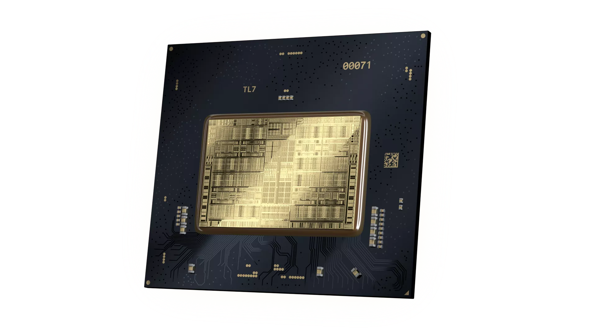

High Performance Graphics
Xe HPG microarchitecture is engineered from the ground-up to deliver breakthrough performance, efficiency, and scalability for gamers and creators.
With new Xe-cores featuring built-in XMX AI capabilities and advanced 3D acceleration hardware, Xe HPG microarchitecture is optimized for high performance gaming and elevates experiences across multiple platforms from mobile to desktop to cloud.
Xe-cores with XMX
Xe-cores are the new foundational compute building blocks within Intel’s portfolio of GPUs. They implement the Xe ISA with optimizations for specific market segments and workloads such as graphics and gaming.
Each Xe-core found in Xe HPG GPUs is configured with a set of 256-bit Vector Engines designed to accelerate traditional graphics and compute workloads, and new 1024-bit Matrix Engines, or Xe Matrix eXtensions, engineered to accelerate AI workloads.
Rasterization Meets Ray Tracing
Rasterization and ray tracing are fundamental to real-time graphics and will power the future of gaming. Xe HPG GPUs integrate a full set of graphics acceleration hardware engineered to accelerate both rasterization and ray tracing workloads and is optimized for both DirectX® 12 Ultimate and Vulkan*.
This fixed function rendering includes geometry processing, rasterization, textures sampling, pixel processing and ray tracing.
The new ray tracing unit architecture provides full support for DirectX® Raytracing and Vulkan* RT, enabling true-to-life lightning and visual fidelity with acceleration for ray traversals, ray-box intersections, and ray-primitive intersections.

Highly Scalable Graphics Engine
The Render Slice is how configurations of Xe HPG GPUs scale from low power solutions to enthusiast class gaming powerhouses. A high bandwidth memory fabric with a large L2 cache connecting each slice enables the flexibility to scale up to powerful multi-slice configurations and connects to a discrete GPU infrastructure.

Intel Architecture Day 2021
See all the disclosures and catch a replay of Intel Architecture Day 2021 below.
Learn more
Intel Architecture Day 2021
See all the disclosures and catch a replay of Intel Architecture Day 2021 below.
Learn more
Xe-cores with XMX
Xe-cores are the new foundational compute building blocks within Intel’s portfolio of GPUs. They implement the Xe ISA with optimizations for specific market segments and workloads such as graphics and gaming.
Each Xe-core found in Xe HPG GPUs is configured with a set of 256-bit Vector Engines designed to accelerate traditional graphics and compute workloads, and new 1024-bit Matrix Engines, or Xe Matrix eXtensions, engineered to accelerate AI workloads.